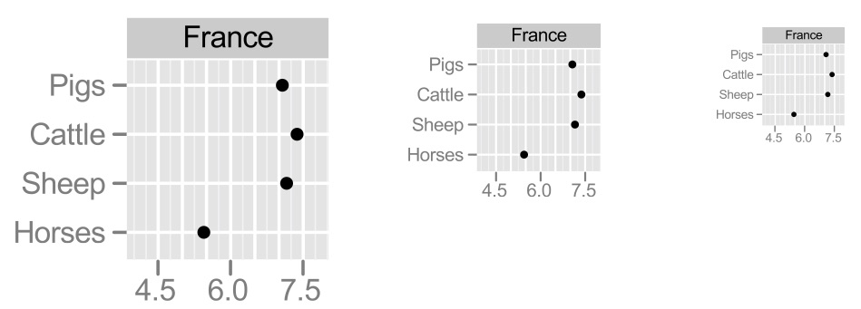
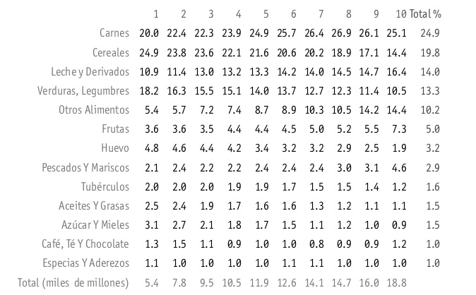

Apéndice: Principios de visualizacion
“The simple graph has brought more information to the data analyst’s mind than any other device.”
— John Tukey
El cuarteto de Anscombe
En 1971 un estadístico llamado Frank Anscombe (fundador del departamento de Estadística de la Universidad de Yale) publicó cuatro conjuntos de dato. Cada uno consiste de 11 observaciones. La peculariedad de estos conjuntos es que tienen las mismas propiedades estadísticas.
Sin embargo, cuando analizamos los datos de manera gráfica en un histograma encontramos rápidamente que los conjuntos de datos son muy distintos.
Media de \(x\): 9
Varianza muestral de \(x\): 11
Media de \(y\): 7.50
Varianza muestral de \(y\): 4.12
Correlación entre \(x\) y \(y\): 0.816
Línea de regresión lineal: \(y = 3.00 + 0.500x\)
En la gráfica del primer conjunto de datos, se ve clara una relación lineal simple con un modelo que cumple los supuestos de normalidad. La segunda gráfica (arriba a la derecha) muestra unos datos que tienen una asociación pero definitivamente no es lineal. En la tercera gráfica (abajo a la izquierda) están puntos alineados perfectamente en una línea recta, excepto por uno de ellos. En la última gráfica podemos ver un ejemplo en el cual basta tener una observación atípica para que se produzca un coeficiente de correlación alto aún cuando en realidad no existe una asociación lineal entre las dos variables.
El cuarteto de Ascombe inspiró una técnica reciente para crear datos que comparten las mismas propiedades estadísticas al igual que en el cuarteto, pero que producen gráficas muy distintas (Matejka, Fitzmaurice).
Introducción
La visualización de datos no trata de hacer gráficas “bonitas” o “divertidas”, ni de simplificar lo complejo o ayudar a una persona “que no entiende mucho” a entender ideas complejas. Más bien, trata de aprovechar nuestra gran capacidad de procesamiento visual para exhibir de manera clara aspectos importantes de los datos.
El siguiente ejemplo de (Tufte 2006), ilustra claramente la diferencia entre estos dos enfoques. A la izquierda están gráficas (más o menos típicas de Powerpoint) basadas en la filosofía de simplificar, de intentar no “ahogar” al lector con datos. El resultado es una colección incoherente, de bajo contenido, que no tiene mucho qué decir y que es, “indeferente al contenido y la evidencia”. A la derecha está una variación del rediseño de Tufte en forma de tabla, que en este caso particular es una manera eficiente de mostrar claramente los patrones que hay en este conjunto simple de datos.
¿Qué principios son los que soportan la efectividad de esta tabla sobre la gráfica de la derecha? Veremos que hay dos conjuntos de principios importantes: unos relacionados con el diseño y otros con la naturaleza del análisis de datos, independientemente del método de visualización.

Visualización popular de datos
Publicaciones populares (periódicos, revistas, sitios internet) muchas veces incluyen visualización de datos como parte de sus artículos o reportajes. En general siguen el mismo patrón que en la visión tradicionalista de la estadística: sirven más para divertir que para explicar, tienden a explicar ideas simples y conjuntos chicos de datos, y se consideran como una “ayuda” para los “lectores menos sofisticados”. Casi siempre se trata de gráficas triviales (muchas veces con errores graves) que no aportan mucho a artículos que tienen un nivel de complejidad mucho mayor (es la filosofía: lo escrito para el adulto, lo graficado para el niño).

Teoría de visualización de datos
Existe teoría fundamentada acerca de la visualización. Después del trabajo pionero de Tukey, los principios e indicadores de Tufte se basan en un estudio de la historia de la graficación y ejercicios de muestreo de la práctica gráfica a lo largo de varias disciplinas (¿cuáles son las mejores gráficas? ¿por qué?) El trabajo de Cleveland es orientado a la práctica del análisis de datos (¿cuáles gráficas nos han ayudado a mostrar claramente los resultados del análisis?), por una parte, y a algunos estudios de percepción visual.
En resumen, hablaremos de las siguientes guías:
Principios generales del diseño analítico
Aplicables a una presentación o análisis completos, y como guía para construir nuevas visualizaciones (Tufte 2006).
Principio 1. Muestra comparaciones, contrastes,
diferencias.
Principio 2. Muestra causalidad, mecanismo,
explicación, estructura sistemática.
Principio 3. Muestra datos multivariados, es decir, más
de una o dos variables.
Principio 4. Integra palabras, números, imágenes y
diagramas.
Principio 5. Describe la totalidad de la evidencia.
Muestra fuentes usadas y problemas relevantes.
Principio 6. Las presentaciones analíticas, a fin de
cuentas, se sostienen o caen dependiendo de la calidad, relevancia e
integridad de su contenido.
Técnicas de visualización
Esta categoría incluye técnicas específicas que dependen de la forma de nuestros datos y el tipo de pregunta que queremos investigar (Tukey (1977), William S. Cleveland (1993), W. S. Cleveland (1994), Tufte (2006)).
Tipos de gráficas: cuantiles, histogramas, caja y
brazos, gráficas de dispersión, puntos/barras/ líneas, series de
tiempo.
Técnicas para mejorar gráficas: Transformación de
datos, transparencia, vibración, banking 45, suavizamiento y bandas de
confianza.
Pequeños múltiplos
Indicadores de calidad gráfica
Aplicables a cualquier gráfica en particular. Estas son guías concretas y relativamente objetivas para evaluar la calidad de una gráfica (Tufte 1986).
Integridad Gráfica. El factor de engaño, es decir,
la distorsión gráfica de las cantidades representadas, debe ser
mínimo.
Chartjunk. Minimizar el uso de decoración gráfica que
interfiera con la interpretación de los datos: 3D, rejillas, rellenos
con patrones.
Tinta de datos. Maximizar la proporción de tinta de
datos vs. tinta total de la gráfica. For non-data- ink, less is
more. For data-ink, less is a bore.
Densidad de datos. Las mejores gráficas tienen mayor
densidad de datos, que es la razón entre el tamaño del conjunto de datos
y el área de la gráfica. Las gráficas se pueden encoger mucho.
Percepción visual. Algunas tareas son más fáciles para el ojo humano que
otras (W. S. Cleveland 1994).
Factor de engaño y Chartjunk

El factor de engaño es el cociente entre el efecto mostrado en una gráfica y el efecto correspondiente en los datos. Idealmente, el factor de engaño debe ser 1 (ninguna distorsión).
El chartjunk son aquellos elementos gráficos que no corresponden a variación
de datos, o que entorpecen la interpretación de una gráfica.
Estos son los indicadores de calidad más fáciles de entender y aplicar, y
afortunadamente cada vez son menos comunes.
Un diseño popular que califica como chartjunk y además introduce factores de engaño es el pie de 3D. En la gráfica de la derecha, podemos ver como la rebanada C se ve más grande que la rebanada A, aunque claramente ese no es el caso (factor de engaño). La razón es la variación en la perspectiva que no corresponde a variación en los datos (chartjunk).
Crítica gráfica: Gráfica de pie
Todavía elementos que pueden mejorar la comprensión de nuestra gráfica de pie: se trata de la decodificiación que hay que hacer categoría - color - cuantificación. Podemos agregar las etiquetas como se muestra en la serie de la derecha, pero entonces: ¿por qué no mostrar simplemente la tabla de datos? ¿qué agrega el pie a la interpretación?
La deficiencias en el pie se pueden ver claramente al intentar graficar más categorías (13) . En el primer pie no podemos distinguir realmente cuáles son las categorías grandes y cuáles las chicas, y es muy difícil tener una imagen mental clara de estos datos. Agregar los porcentajes ayuda, pero entonces, otra vez, preguntamos cuál es el propósito del pie. La tabla de la izquierda hace todo el trabajo (una vez que ordenamos las categrías de la más grande a la más chica). Es posible hacer una gráfica de barras como la de abajo a la izquierda.

Hay otros tipos de chartjunk comunes: uno es la textura de barras, por ejemplo. El efecto es la producción de un efecto moiré que es desagradable y quita la atención de los datos, como en la gráfica de barras de abajo. Otro común son las rejillas, como mostramos en las gráficas de la izquierda. Nótese como en estos casos hay efectos ópticos no planeados que degradan la percepción de los patrones en los datos.
Pequeños múltiplos y densidad gráfica
La densidad de una gráfica es el tamaño del conjunto de datos que se grafica comparado con el área total de la gráfica. En el siguiente ejemplo, graficamos en logaritmo-10 de millones de cabezas de ganado en Francia (cerdos, res, ovejas y caballos). La gráfica de la izquierda es pobre en densidad pues sólo representa 4 datos. La manera más fácil de mejorar la densidad es hacer más chica la gráfica:

La razón de este encogimiento es una que tiene qué ver con las oportunidades perdidas de una gráfica grande. Si repetimos este mismo patrón (misma escala, mismos tipos de ganado) para distintos países obtenemos la siguiente gráfica:
Esta es una gráfica de puntos. Es útil como sustituto de una gráfica de barras, y es superior en el sentido de que una mayor proporción de la tinta que se usa es tinta de datos. Otra vez, mayor proporción de tinta de datos representa más oportunidades que se pueden capitalizar.
Más pequeños múltiplos
Los pequeños múltiplos presentan oportunidades para mostrar más acerca de nuestro problema de interés. Consideramos por ejemplo la relación de radiación solar y niveles de ozono:
En el ejemplo anterior incluyendo una variable adicional (velocidad del viento) podemos entender más acerca de la relación de radiación solar y niveles de ozono:
Tinta de datos
Maximizar la proporción de tinta de datos en nuestras gráficas tiene beneficios inmediatos. La regla es: si hay tinta que no representa variación en los datos, o la eliminación de esa tinta no representa pérdidas de significado, esa tinta debe ser eliminada. El ejemplo más claro es el de las rejillas en gráficas y tablas:
¿Por qué usar grises en lugar de negros? La respuesta tiene qué ver con el principio de tinta de datos: si marcamos las diferencias sutil pero claramente, tenemos más oportunidades abiertas para hacer énfasis en lo que nos interesa: a una gráfica o tabla saturada no se le puede hacer más - es difícil agregar elementos adicionales que ayuden a la comprensión. Si comenzamos marcando con sutileza, entonces se puede hacer más. Los mapas geográficos son un buen ejemplo de este principio.
El espacio en blanco es suficientemente bueno para indicar las fronteras en una tabla, y facilita la lectura:

Para un ejemplo del proceso de rediseño de una tabla, ver aquí. Finalmente, podemos ver un ejemplo que intenta incorporar los elementos del diseño analítico, incluyendo pequeños múltiplos:
Percepción de escala
Entre la percepción visual y la interpretación de una gráfica están implícitas tareas visuales específicas que las personas debemos realizar para ver correctamente la gráfica. En la década de los ochenta, William S. Cleveland y Robert McGill realizaron algunos experimentos identificando y clasificando estas tareas para diferentes tipos de gráficos (William S. Cleveland and McGill 1984). En estos, se le pregunta a la persona que compare dos valores dentro de una gráfica, por ejemplo, en dos barras en una gráfica de barras, o dos rebanadas de una gráfica de pie.

Los resultados de Cleveland y McGill fueron replicados por Heer y Bostock en 2010 y los resultados se muestran en las gráficas de la derecha:

Ejemplo: gráfica de Minard
Concluimos esta sección con una gráfica que, aunque poco común, ejemplifica los principios de una buena gráfica, y es reconocida como una de las mejores visualizaciones de la historia.
Una gráfica excelente, presenta datos interesantes de forma bien diseñada: es una cuestión de fondo, de diseño, y estadística… [Se] compone de ideas complejas comunicadas con claridad, precisión y eficiencia. … [Es] lo que da al espectador la mayor cantidad de ideas, en el menor tiempo, con la menor cantidad de tinta, y en el espacio más pequeño. … Es casi siempre multivariado. … Una excelente gráfica debe decir la verdad acerca de los datos. (Tufte, 1983)
La famosa visualización de Charles Joseph Minard de la marcha de Napoleón sobre Moscú, ilustra los principios de una buena gráfica. Tufte señala que esta imagen “bien podría ser el mejor gráfico estadístico jamás dibujado”, y sostiene que “cuenta una historia rica y coherente con sus datos multivariados, mucho más esclarecedora que un solo número que rebota en el tiempo”. Se representan seis variables: el tamaño del ejército, su ubicación en una superficie bidimensional, la dirección del movimiento del ejército y la temperatura en varias fechas durante la retirada de Moscú”.
{kind=link}

Hoy en día Minard es reconocido como uno de los principales contribuyentes a la teoría de análisis de datos y creación de infografías con un fundamento estadístico.
Se grafican 6 variables: el número de tropas de Napoleón, la distancia, la temperatura, la latitud y la longitud, la dirección en que viajaban las tropas y la localización relativa a fechas específicas.
La gráfica de Minard, como la describe E.J. Marey, parece “desafiar la pluma del historiador con su brutal elocuencia”, la combinación de datos del mapa, y la serie de tiempo, dibujados en 1869, “retratan una secuencia de pérdidas devastadoras que sufrieron las tropas de Napoleón en 1812”. Comienza en la izquierda, en la frontera de Polonia y Rusia, cerca del río Niemen. La línea gruesa dorada muestra el tamaño de la Gran Armada (422,000) en el momento en que invadía Rusia en junio de 1812.
El ancho de esta banda indica el tamaño de la armada en cada punto del mapa. En septiembre, la armada llegó a Moscú, que ya había sido saqueada y dejada desértica, con sólo 100,000 hombres.
El camino del retiro de Napoleón desde Moscú está representado por la línea oscura (gris) que está en la parte inferior, que está relacionada a su vez con la temperatura y las fechas en el diagrama de abajo. Fue un invierno muy frío, y muchos se congelaron en su salida de Rusia. Como se muestra en el mapa, cruzar el río Berezina fue un desastre, y el ejército de Napoleón logró regresar a Polonia con tan sólo 10,000 hombres.
También se muestran los movimientos de las tropas auxiliaries, que buscaban proteger por atrás y por la delantera mientras la armada avanzaba hacia Moscú. La gráfica de Minard cuenta una historia rica y cohesiva, coherente con datos multivariados y con los hechos históricos, y que puede ser más ilustrativa que tan sólo representar un número rebotando a lo largo del tiempo.